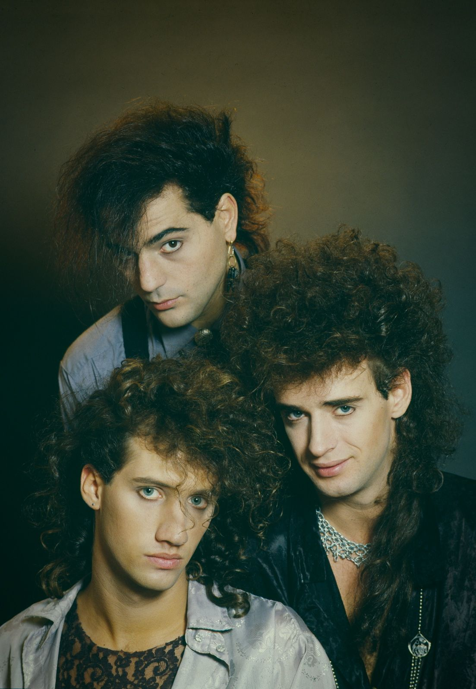

Uno de mis pasatiempos favoritos es escuchar música, y una de mis bandas favoritas, sin duda es Soda stereo.
A mi parecer es una de las bandas de rock más influyentes de latinoamerica, logrando el éxito mundial con su particular estilo.
La agrupación está conformada por Gustavo Cerati como vocalista y guirrista, Zeta Bosio como bajista y Charly Alberti como baterista, todos ellos argentinos.
A lo largo de su carrera cosecharon un buen número de éxitos y de fans a lo largo de latinoamérica (entre los cuales me incluyo)
Sin embargo pasando los años comenzaron a gestarse conflictos entre los miembros de la banda dejando así como resultado la disolución de la banda en 1997.
En ese mismo año de 1997 la banda se reunió en una gira de despedida alrededor de latinoamérica, terminando ésta en su natal Argentina. Posteriormente se reunirían en el 2007 para una nueva gira.
Sin duda Soda Stereo destacaba, entre otras cosas, por sus excelentes interpretaciones en vivo, dejando así joyas como esta: